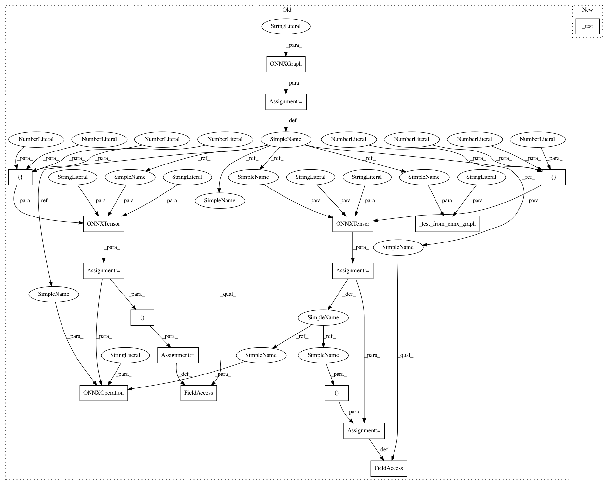

3e5f67ba78d7bdfd64735a0679a488613b1b6fc9,tests/conversion/onnx_layer_test_cases.py,ONNXLayerTestCases,test_Neg,#ONNXLayerTestCases#,530
Before Change
// pass
def test_Neg(self):
g = ONNXGraph("test_network")
x = ONNXTensor(graph=g, name="x", shape=[1, 2, 5, 5], dtype="FLOAT")
y = ONNXTensor(graph=g, name="y", shape=[1, 2, 5, 5], dtype="FLOAT")
ONNXOperation(graph=g, name="Neg", inputs=x, outputs=y)
g.inputs = (x,)
g.outputs = (y,)
self._test_from_onnx_graph(g, "Neg")
def test_Not(self):
self._test_from_caffe2(self.get_unary_network_function("Not", dtype=onnx.TensorProto.BOOL))
After Change
// pass
def test_Neg(self):
self._test(self._unary("Neg"))
def test_Not(self):
self._test(self._unary("Not", dtype="BOOL"))
In pattern: SUPERPATTERN
Frequency: 3
Non-data size: 17
Instances
Project Name: KhronosGroup/NNEF-Tools
Commit Name: 3e5f67ba78d7bdfd64735a0679a488613b1b6fc9
Time: 2019-04-17
Author: tamas.danyluk2@gmail.com
File Name: tests/conversion/onnx_layer_test_cases.py
Class Name: ONNXLayerTestCases
Method Name: test_Neg
Project Name: KhronosGroup/NNEF-Tools
Commit Name: 3e5f67ba78d7bdfd64735a0679a488613b1b6fc9
Time: 2019-04-17
Author: tamas.danyluk2@gmail.com
File Name: tests/conversion/onnx_layer_test_cases.py
Class Name: ONNXLayerTestCases
Method Name: test_Equal
Project Name: KhronosGroup/NNEF-Tools
Commit Name: 3e5f67ba78d7bdfd64735a0679a488613b1b6fc9
Time: 2019-04-17
Author: tamas.danyluk2@gmail.com
File Name: tests/conversion/onnx_layer_test_cases.py
Class Name: ONNXLayerTestCases
Method Name: test_Less